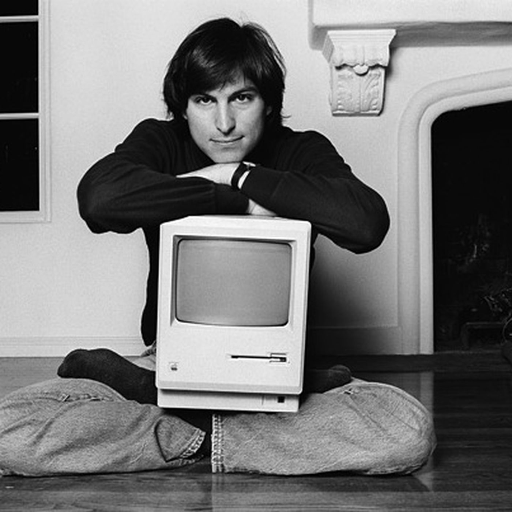
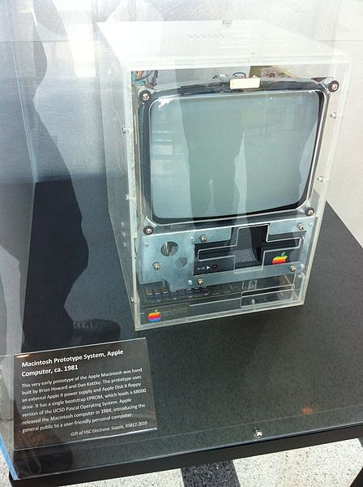

About Steve Jobs
Steve Jobs was an American business magnate, industrial designer, investor, and media proprietor. He was the chairman, chief executive officer (CEO), and co-founder of Apple Inc.; the chairman and majority shareholder of Pixar; a member of The Walt Disney Company's board of directors following its acquisition of Pixar; and the founder, chairman, and CEO of NeXT. Jobs is widely recognized as a pioneer of the personal computer revolution of the 1970s and 1980s, along with Apple co-founder Steve Wozniak.
Major Works
Apple I
The Apple I was the first product sold by Apple Inc. It was designed and hand-built by Steve Wozniak. Steve Jobs had the idea of selling the computer and handled the business side.
Macintosh
The Macintosh, released in 1984, was the first successful personal computer to feature a mouse and a graphical user interface. It revolutionized the personal computing industry.
iPod
Introduced in 2001, the iPod is a line of portable media players designed and marketed by Apple Inc. The iPod revolutionized the music industry and set the stage for Apple's success with the iPhone.
iPhone
.jpg)
The iPhone, launched in 2007, is a line of smartphones designed and marketed by Apple Inc. It is one of the most influential gadgets in the history of technology, revolutionizing the smartphone industry.